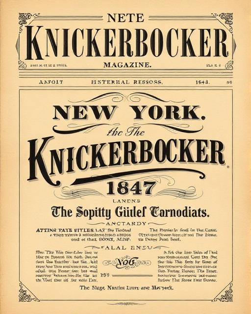

Dive into the fascinating history of the world's most enduring joke, from its 1847 origins to modern cultural significance.
First published in The Knickerbocker magazine in New York
A clever wordplay version emerges
The joke becomes a staple of American comedy
Scholars identify it as perfect anti-humor
Digital age brings infinite variations

The joke appeared in the March 1847 issue as a simple riddle: "Why does a chicken cross the street? Are you 'out of town?' Do you 'give it up?' Well then: 'Because it wants to get on the other side!'"
Meaning: The original anti-humor classic - the punchline is disappointingly obvious
Cultural Context: Represents American straightforward humor and the concept of anti-jokes
Discover some of the most popular variations that have emerged over the years.
Why did the rubber chicken cross the road? She wanted to stretch her legs!